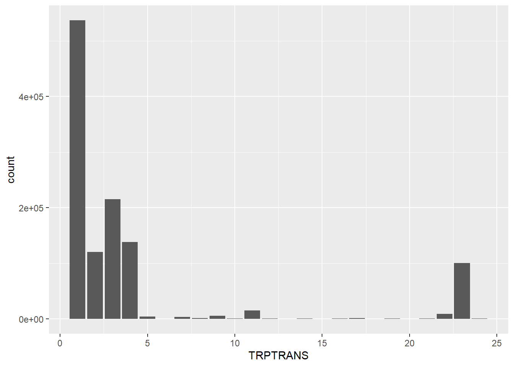

Chapter 5 Data Analysis
The data for trips taken in the 2009 NHTS show that relatively low amounts of trips were taken using public transit modes. Those modes include local public bus (9), commuter bus (10), commuter train (16), and subway (17).
## -- Attaching packages --------------------------------------- tidyverse 1.3.0 --## v ggplot2 3.3.2 v purrr 0.3.4
## v tibble 3.0.3 v dplyr 1.0.2
## v tidyr 1.1.2 v stringr 1.4.0
## v readr 1.3.1 v forcats 0.5.0## -- Conflicts ------------------------------------------ tidyverse_conflicts() --
## x dplyr::filter() masks stats::filter()
## x dplyr::lag() masks stats::lag()trips_2009 <- read.csv("C:/DAYV2PUB.csv")
trips_2009 %>%
group_by(TRPTRANS) %>%
summarise(count=n()) %>%
filter(TRPTRANS>0) %>%
ggplot(aes(x=TRPTRANS,y=count)) +
geom_bar(stat="identity")## `summarise()` ungrouping output (override with `.groups` argument)
The
trips_2009 %>%
filter(TRPTRANS==c(9,10,16,17)) %>% #filter for transit modes
filter(TRIPPURP==c("HBO","HBSHOP","HBSOCREC","HBW","NHB")) %>%
filter(TRPMILES>=0) %>% #filter undetermined results
ggplot(aes(x=TRIPPURP,y=TRPMILES)) +
geom_bar(stat="identity")## Warning in TRPTRANS == c(9, 10, 16, 17): longer object length is not a multiple
## of shorter object length## Warning in TRIPPURP == c("HBO", "HBSHOP", "HBSOCREC", "HBW", "NHB"): longer
## object length is not a multiple of shorter object lengthlibrary(tidyverse)
trips_2017 <- read.csv("C:/DAYV2PUB.csv")
trips_2017 %>%
group_by(TRPTRANS) %>%
summarise(count=n()) %>%
filter(TRPTRANS>0,TRPTRANS<21) %>%
ggplot(aes(x=TRPTRANS,y=count)) +
geom_bar(stat="identity")## `summarise()` ungrouping output (override with `.groups` argument)trips_2017 %>%
filter(TRPTRANS==c(11,15,16)) %>% #filter for transit modes
filter(TRIPPURP==c("HBO","HBSHOP","HBSOCREC","HBW","NHB")) %>% #select trip purposes
filter(TRPMILES>=0) %>% #filter undetermined results
ggplot(aes(x=TRIPPURP,y=TRPMILES)) +
geom_bar(stat="identity")## Warning in TRIPPURP == c("HBO", "HBSHOP", "HBSOCREC", "HBW", "NHB"): longer
## object length is not a multiple of shorter object length